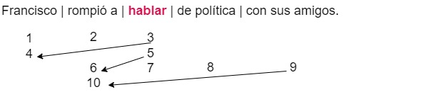
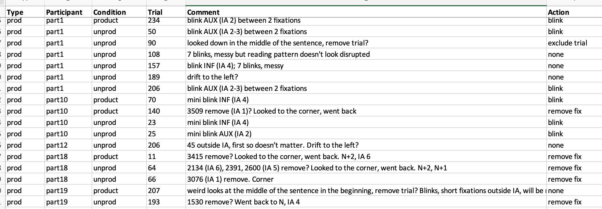

Reading
Welcome back!
Any questions from yesterday?
Overview of today
Eye-tracking during reading
- Eye movements in reading
- Reading paradigms
- Linking hypothesis
- Reading measures
- Examples and confounds
- Data pre-processing
Eye movements in reading
Reading research in a nutshell
We have a wealth of paradigms to explore how individuals comprehend a piece of written text (from single words to multiple sentences, created stimuli or real texts), considering both low-level processes for word identification (e.g., lexical access) and higher-level processes for sentence and discourse comprehension (e.g., inferences).
Reading is a skill
- Reading is relatively new
- Homo Sapiens \(\pm\) 300.000 BC
- Sumerian pictographic writing \(\pm\) 3.300 BC
- Phoenician alphabetic language \(\pm\) 2.000 BC
- Exposure, practice, formal instruction
- We are good at it (\(\pm\) 250 WPM; Brysbaert, 2019)
- Linked to academic achievement, late L2 acquisition
History
Javal (1879)
- Reading is not smooth
Mid-70s: Technological advances
Rayner’s work
- Clifton et al., 2016: “Eye movements in reading and information processing: Keith Rayner’s 40 year legacy”
Some general facts
- Most people are good at reading, but there are individual differences (e.g., reading proficiency, L1 vs. L2…)
- There seems to be some immediacy1 when comprehending a text, but we also get ahead of ourselves
- In contrast to spoken language, people can go back when they encounter a difficulty, and indeed they do
Eye movements in reading
Human Visual System (recap):
- Fovea: highest visual acuity
- Parafovea: still partial recognition of objects
- Periphery: blurred image
Fixations vs. saccades: movements (saccades) that place objects on the fovea for processing (fixations).
Eye movements in reading
How does this work in reading?
- A priori: Our eyes move, so that objects (words?) are placed on the fovea and can be processed.
…but this is not exactly so.
Eye movements in reading
From Conklin et al., 2018
Eye movements in reading
- Fovea does not equate the perceptual span (= effective visual field)
- Reading is asymmetric = asymmetric extraction of information
- Bias towards the direction of reading in the language
- English: 3-41 letter spaces (1 degree of visual angle) to the left, 14-15 ls to the right
Eye movements in reading
Fixations
- Mean duration (silent reading in English): 200 - 250 ms
- Lexical access initiated at about 100 ms (Sereno & Rayner, 2003)
- Optimal Viewing Position
- Most reading measures are based on fixation durations
- Affected by word length, frequency, predictability, etc.
Data from Mariia Baltais
Eye movements in reading
Saccades
- Saccadic supression
- Saccadic latency (about 200 ms)
- Mean size (silent reading in English): 7 to 9 letter spaces (\(\pm\) 2 words before or after the fixated word)
- Size = distance travelled (amplitude)
- Not analyzed except for backward saccades (regressions)
Data from Mariia Baltais
Eye movements in reading
Regressions
- 10-15% of the saccades are regressions to preceding areas
- To correct ‘overshooting’
- Processing difficulty
Data from Mariia Baltais
Eye movements in reading
Eye movements in reading
Skipping
- 70% of the words in a text are fixated
- Content words are fixated 85% of the time, function words 35% of the time
- Main predictor: word length; also predictability, frequency, etc.
- Parafoveal processing!
- Due to ‘overshooting’ or processing ease
Eye movements in reading
Blinking
- Noise
- Cf. data pre-processing
- Cognitive role (attention)?
- Cornelis et al. (2025): naturalistic reading
- More blinks at punctuation marks; less blinks if high word frequency and predictability (“time-out”?)
Data from Mariia Baltais
Reading paradigms
Reading paradigms
Differ in ecological validity.
- Gaze-contigent paradigms: eye gaze determines changes in the text display
- Reading of experimental stimuli
- Reading of natural text
Gaze-contigent paradigms
Moving window paradigm (e.g., McConkie & Rayner, 1975)
- IA1: Mask everything that’s not fixated.
- Shows: Parafoveal processing and perceptual span (extraction and use of information).
- IV: Size of the window.
Gaze-contigent paradigms
Moving window paradigm (e.g., McConkie & Rayner, 1975)
Gaze-contigent paradigms
Some other examples (see next slides for details).
- Foveal mask (moving mask) paradigm: the reverse of moving window
- Disappearing text paradigm
- Fast priming paradigm
- Boundary paradigm
- etc.
Gaze-contigent paradigms
Foveal mask paradigm (e.g., Rayner & Bertera, 1979)
- IA: Mask what’s fixated.
- Shows: Parafoveal processing and perceptual span.
- IV: Size of the window.
Gaze-contigent paradigms
Foveal mask paradigm (e.g., Rayner & Bertera, 1979)
Gaze-contigent paradigms
Disappearing text paradigm (e.g., Liversedge et al., 2004)
- IA: Disappears after having been fixated for a certain time.
- Shows: Parafoveal + foveal processing.
- IV: Time to disappear.
- Amount of visual exposure necessary for word recognition.
Gaze-contigent paradigms
Disappearing text paradigm (e.g., Liversedge et al., 2004)
Gaze-contigent paradigms
Fast priming paradigm (e.g., Sereno & Rayner, 1992)
- IA: First there is a prime in the target location. After the target location has been fixated for some time, the target word appears.
- Shows: Priming effect (facilitation).
- IV: Relationship prime and target.
Gaze-contigent paradigms
Fast priming paradigm (e.g., Sereno & Rayner, 1992)
Gaze-contigent paradigms
Boundary paradigm (e.g., Rayner, 1975)
- Saccadic suppression.
- IA: Masked and then changed to target word after the gaze crosses an invisible boundary.
- Shows: Parafoveal processing and perceptual span.
- Preview effect (slowdown).
- Preview benefit when no mask in the control condition.
- Parafoveal-on-foveal effects (e.g., Drieghe, 2011).
- IV: What information is extracted, e.g., visual similarity mask-target.
Gaze-contigent paradigms
Boundary paradigm (e.g., Rayner, 1975)
Reading of experimental stimuli
Linguistic and non-linguistic factors affecting eye movement patterns in reading.
Usually, exploration of how patterns over an IA differ as a function of its properties.
Reading of experimental stimuli (sentences)
Frazier & Rayner, 1982
- Garden-path sentences: early closure vs. late closure.
Reading of experimental stimuli (texts)
Pellicer-Sánchez, 2016
- Incidental L2 vocabulary acquisition over repetitive exposure
From Conklin et al., 2018
Reading of natural text
GECO corpus (Cop et al., 2017)
- The Mysterious Affair At Styles by Agatha Christie (1920)
Reading of natural text
Ecological validity but lack of control over text:
- Data collection: participants’ characteristics, matching samples
- Analysis: mixed-effects models, control variables (already annotated in corpora)
Linking hypothesis
Linking hypothesis
Fixations, regressions, skipping -> wide range of measures.
Reading (during a fixation) entails the use of visual, orthographic, phonological, and morphological information to:
- Identify a word
- Activate its lexical representation
- Integrate with the preceding context
- Predict what’s next?
Linking hypothesis
What we look at = what we are processing
For how long we look = how difficult it is to process
- Extends beyond linguistic processing (visual attention)
Just and Carpenter’s (1980) eye-mind hypothesis:
- The eye remains fixated on a word as long as the word is being processed
Just and Carpenter’s (1980) immediacy hypothesis:
- Readers try to interpret each content word as soon as it is encountered
Linking hypothesis
The more difficult the text…
- The ________________ the fixation durations
- The ________________ the saccade sizes
- The ________________ the regressions
- The ________________ the skipping of words
Linking hypothesis
The more difficult the text…
- The longer the fixation durations
- The smaller the saccade sizes
- The more frequent the regressions
- The less frequent the skipping of words
Linking hypothesis
“Strong” eye-mind hypothesis: readers fixate a word until it’s processed as far as possible (how far?)
Morrison, 1984: completion of lexical access on word n -> immediate shift in attention & planning a saccade to word n+1
Boland, 2004: the eyes do not leave a word until it has been structurally integrated
Linking hypothesis
Too strong?
Pickering et al. (2004): some aspects of processing take more time than the eye is “prepared to wait”
- Semantic processing: “A lot of Americans protested during Finland.”
Mitchell et al. (2008): regressions are not only linguistically supervised (‘time-out’ to postpone new input)
Linking hypothesis
Asymmetrical perceptual span:
- Preview benefit: some info about n+1 while still on n -> shorter reading times n+1
- Lexical processing can start before a word is fixated
- Parafoveal-on-foveal effects: characteristics of n+1 influence reading times for n
- Mixed findings, see Table 4.1 in Conklin et al., 2018 (p. 83)
Linking hypothesis
As well as:
- Spillover effects: characteristics of n influence reading times for n+1
- Processing has not been completed
Therefore,
Serial vs. parallel processing debate
Different models of reading (E-Z Reader vs. SWIFT; OB1-Reader)
Mlinarič et al. (2025): ± three words in parallel
Reading measures
Reading measures
Fixations, regressions, and skipping form multiple reading measures that arguably tap into different cognitive processes.
- Global vs. local measures
- Overall reading behaviour vs. smaller units of text
- Local measures: early (vs. intermediate) vs. late (see also Clifton et al., 2007)
Reading measures
Reading measures <-> specific cognitive events?
No agreement on linking: it depends on researchers’ theoretical assumptions (Boland, 2004).
Traditionally,
- Early measures: highly automatic word recognition and lexical access processes
- Late measures: more conscious, controlled, strategic processes, such as syntactic and semantic integration
Early measures
First-pass measures (before moving to n+1).
- First fixation duration (ms)
- Single fixation duration (ms)
- Gaze duration (= first-pass reading time = first-run dwell time): time on n before leaving it in either direction
- Skipping rate: % trials where the IA was skipped on first pass
- Influenced by length, frequency, predictability, etc.
Early measures
First-pass measures (before moving to n+1).
- First fixation duration: 3
- Single fixation duration: NA (two first-pass fix)
- Gaze duration: 3+4
- Skipping: no (IA wasn’t skipped in this trial)
Intermediate measures
- Regression-path duration (= go-past time): time on n, n-1, etc., before moving to n+1
- (First-pass) regressions-out rate: % trials where there was a regression out of the IA
- Lexical and integration difficulties
Intermediate measures
- Regression-path duration: 3+4+5+6
- First-pass regressions-out: yes (between fix 4 and 5)
Late measures
- Re-reading time, second-pass reading time: different definitions across literature
- Regressions-in rate: % trials where there was a regression back into the IA
- Re-analysis, integration difficulties
- Total reading time (= dwell time): sum of all fixations
- Fixation count
- Could be early and/or late processing effects
Late measures
- Re-reading time (= regression-path duration - gaze duration): 5+6
- Second-pass reading time (= total reading time - gaze duration): 6+9
- Regressions-in: yes (between fix 8 and 9)
- Total reading time: 3+4+6+9
- Fixation count: four fix
Reading measures
Measures are dependent on each other:
- First fixation duration \(\subseteq\) gaze duration \(\subseteq\) total reading time, etc.
- Late measures are cumulative
- No transparent mapping of measures to cognitive events!
Therefore,
- An effect must be visible in > 1 measure (rule of thumb)
- Analysis: correction for multiple comparisons (Type I error)
- cf. von der Malsburg & Angele (2017)
Reading measures
Recap:

From Carroll, 2017
Reading measures: exercise

- First fixation duration:
- Gaze duration:
- First-pass regressions-out:
- Regression-path duration:
- Total reading time:
- Fixation count:
Reading measures: exercise
- First fixation duration: 3
- Gaze duration: 3
- First-pass regressions-out: yes (between fix 3 and 4, fix 5 and 6)
- Regression-path duration: 3+4+5+6+7
- Total reading time: 3+5+7
- Fixation count: three fix
Reading measures: minimum set
Both early and late.
Usually reported:
- Skipping rate
- First fixation duration
- Gaze duration
- First-pass regressions-out
- Regression-path duration
- Total reading time
But: the more precise your hypotheses, the better! (fewer comparisons, cf. von der Malsburg & Angele, 2017)
Examples and confounds
Sentence reading experiment
Elements:
- Text (e.g., a sentence)
- Optional task (e.g., a comprehension question)
Trial sequence: Drift correction -> Visual presentation.
Drift correction
Where the first character appears:

Visual presentation
- Time window of interest is from start to end (no triggers in between)
- Cf. gaze-contingent paradigms
Instead, Interest Areas:

Data from Mariia Baltais
Interest Areas
- Target region n but also
- Pre-target region n-1
- Post-target (spillover) region n+1
Size depends on the research question:
- Single words, phrases, entire clauses…
Interest Areas
- Vertically large enough
- Pre-processing: vertical drift correction

Data from Mariia Baltais
Task
Move to the next trial (button press)
Consider handedness (e.g, turn the button box over)
Useful trick: before pressing, look at the right lower corner of the monitor (e.g., a sticker)
Comprehension questions
- Every now and then / half of the trials / every trial…
Confounds
- Non-linguistic
- Visual presentation, eye-tracker specifics, human visual system
- Linguistic
- Characteristics of the materials
Non-linguistic confounds
Text layout:
- Font style and size
- B&W is not recommended for dyslexic participants
- Monospace font (e.g., Courier)
- 14-18 pt1 (3 letters = 1 degree)
- Margins
- Tracking less accurate at screen borders
Non-linguistic confounds
Target (& spillover) IA:
- Never beginning/end of the line
- 1\(^{st}\) word likely to be under-/overshoot or skipped
- 1\(^{st}\) and last fixations on a line are 5-7 ls from the edges
- 1\(^{st}\) fix longer, last fix shorter
- Never clause-final
- Wrap-up effect
Non-linguistic confounds
- Line spacing1
- Tracking less accurate for vertical movements (vertical drift)
- Double/triple spacing
Linguistic confounds
See Clifton et al., 2016; Conklin et al., 2018 (Ch. 4):
- The Big Three (Frequency, Length, Predictability)
As well as…
- Familiarity, plausibility, prevalence, age of acquisition, lexical ambiguity, orthographic neighbourhood size, etc.
Linguistic confounds
Foveal vs. parafoveal processing:
Sequential nature of reading.
Information from one area can influence eye movements in another area.
Match contexts!
- Predictability, length, etc.
- Serial vs. parallel processing:
- Preview benefit, parafoveal-on-foveal effects (see Drieghe, 2011; Hyönä, 2011)
- Spillover effects
Example: Juhasz & Sheridan (2020)
“The time course of age-of-acquisition effects on eye movements during reading: Evidence from survival analyses”
Background:
- AoA effect: faster processing for words that are learned earlier in life.
- Network plasticity hypothesis: early learned items are encoded more effectively -> AoA influences multiple aspects of lexical processing, including orthography, phonology, and semantics.
- Alternatively, AoA effect is limited to semantic processing.
RQ: Does AoA influence the earliest stages of word recognition during reading?
Example: Juhasz & Sheridan (2020)
Linking hypothesis: E-Z Reader model
- Lexical processing is serial
- Direct lexical control over eye movements
- Two stages: 1) orthography, phonology, familiarity (-> saccade planning), 2) semantics (-> shift in attention)
Which reading measures are of most interest?
Example: Juhasz & Sheridan (2020)
Lexical access -> early measures.
- First fixation duration (!), single fixation duration, gaze duration
- Skipping rate
- Total reading time
Plus a time-course analysis to estimate the earliest divergence point.
Example: Juhasz & Sheridan (2020)
Early AoA: Julia will go to the mall to buy a new skirt when she gets out of work.
Late AoA: Julia will go to the mall to buy a new shawl when she gets out of work.
Which potential confounds can you think of?
Example: Juhasz & Sheridan (2020)
Early AoA: Julia will go to the mall to buy a new skirt when she gets out of work.
Late AoA: Julia will go to the mall to buy a new shawl when she gets out of work.
- Same context through at least the post-target word
- Target word never the first or last two words
Example: Juhasz & Sheridan (2020)
Example: Juhasz & Sheridan (2020)
Finding:
- AoA effects were observed in both early (at 158 ms) and late fixation duration measures.
What did we learn about lexical processing in reading?
Example: Juhasz & Sheridan (2020)
- Word properties can directly influence fixation durations from early on
- AoA affects multiple measures (-> multiple loci within the mental lexicon)
- Consistent with SWIFT, too (lexical processing difficulty inhibits saccade programming)
- Match contexts!
Example: Howard et al. (2017)
“Processing of Co-Reference in Autism Spectrum Disorder”
Background:
- Typicality effect: longer reading times for a category noun (“bird”) when preceded by an atypical exemplar (“penguin”)
- ASD: reduced accuracy for reading comprehension and inferencing tasks (e.g., anaphor -> antecedent)
RQ: Are individuals with ASD less efficient when computing co-referential links during reading?
Which reading measures are of most interest?
Example: Howard et al. (2017)
Comprehension -> global measures:
- Mean fixation duration
- Fixation count
- Total reading time
Inferencing -> target word (“bird”):
- First fixation duration
- Single fixation duration
- Gaze duration
- Total reading time
Example: Howard et al. (2017)
The instruction booklet said that Tom would need a hammer/plunger to fix the kitchen sink. He borrowed the tool from his next door neighbour.
How would you define the IAs?
Example: Howard et al. (2017)
Which potential confounds can you think of?
Example: Howard et al. (2017)
- Target words & contexts are identical across conditions
- Two lines, target in the middle of the second line
- Norming study for typicality
- Individual differences!
Example: Howard et al. (2017)
Finding:
- No group differences (except for more re-reading in ASD)
- ASD difficulties in reading comprehension are unlikely to be accounted for by differences in co-reference processing
- Effects of verbal proficiency (expressive language score) across groups
What to consider when building your own experiment?
Exercise: Wooclap
Think of a research question that can be answered using an eye-tracking during reading paradigm.
- Which eye-tracking measures would you look at?
- Which potential confounds would you consider?
Go to Wooclap (MILS25ETD3) and type your idea!
Exercise: Wooclap
More examples: research topics
- Word recognition
- Frequency effect (Rayner & Duffy, 1986)
- Syntactic processing
- Structural ambiguities (Frazier & Rayner, 1982)
- Semantic integration
- Plausibility effect (Staub et al., 2007)
- Predictive processing (Frisson et al., 2017)
- Parafoveal processing (Juhasz et al., 2009)
- Text comprehension (Dirix et al., 2019)
- Multiword units (Carrol et al., 2016)
- Skim reading (Jayes et al., 2022)
More examples: populations
- L2 speakers
- Gender agreement (Keating, 2009)
- Pronoun resolution (Puebla & Felser, 2022)
- Children (Blythe et al., 2011)
- Older adults (Solan et al., 1995)
- Clinical populations
- Children with dyslexia (Hyönä et al., 1995)
- Adults with ASD (Howard et al., 2017)
What to report?
Materials:
- Paradigm & stimuli (how were the Interest Areas defined?)
- What potential confounds were controlled for (e.g., the Big Three)?
What to report?
Procedure:
- Apparatus (eye-tracker, sampling rate, monitor, calibration procedure, distance to monitor/ET, which eye was recorded…)
- Trial structure
- Text layout (font, size, colours, number of lines, spacing…)
- Position of the critical IAs on the screen
- Task (how were the responses recorded?)
Spoiler: analysis (data pre-processing, critical IAs, choice of measures).
Pros & cons
Pros
- Naturalistic reading.
- Non-invasive method.
- Different stages of processing.
- Combination with offline measures possible.
Cons
- Literacy required.
- Many dependent variables.
- Many potential confounds.
- Resource-costly.
Data pre-processing
Data processing
Today:
- Pre-process data
- Export data for analysis
- Visualization
- Data wrangling
- Analysis
Data pre-processing
- Import data into software
- Time window (= Interest period)
- Assess data
- (Manual) checks
- (Automatized) cleaning
- Prepare data for analysis & export
- Interest Area report
Reading pipeline
Interest period
First make sure your IAs are displayed.
- Preferences > Data Filters > Show IAs

Interest period
From stimulus presentation to button press (trial end)
Check data
Trial-by-trial check.
More time-consuming than VWP but more conventional.
- Drift (vertical, horizontal)
- Blinks
- Unusual behaviours
Check data
Horizontal drift
- Safest -> exclude such trials.
- Especially when you are unsure which IAs certain fixations belong to.
- Never move fixations to the left or right.
Check data
Vertical drift
- Correct (move up/down) fixations that fall outside IAs
- Less work if top and bottom margins were big enough
- To move certain fixations up/down: Windows Alt+arrow, Mac Option+arrow
Check data
Blinks in critical IA
- Exclude trial? Optional
- Individual participants’ behaviour -> exclude participant?
- Happens randomly across conditions, and excluding those trials leads to overall large data loss -> ignore?
Check data
Other
- Participants were instructed to look at the corner when finished reading but went back to re-read
- Remove those extra fixations
Check data
Other
- Started reading from the middle (critical IA)
- Exclude trial

Check data
Keep a detailed log of all changes!
Automatized cleaning
What are we thinking of?
- Extremely short and long fixations (outliers)
- Fixations outside of IAs
Familiarity with previous literature is key.
Balanced loss across conditions.
Automatized cleaning
Different thresholds -> report exactly what you did.
- Short outliers
- Merge short nearby fixations and remove those that couldn’t be merged.
- Or just remove all fixations that are, e.g., < 100 ms (Sereno & Rayner, 2003).
- Merging might inflate fixation measures, nor merging might inflate skipping if short critical IA.
- Long outliers
- Remove all fixations that are, e.g., > 800 ms.
- Delete fixations outside IAs
Automatized cleaning
In-built 4-stage fixation cleaning procedure.
Right-click on the whole folder.
Automatized cleaning
These are settings from D. Drieghe’s lab (non-standard)!
Stage 1: merge fix shorter than 80 ms and less than 0.5 degrees away from each other. Stage 2: merge remaining fix shorter than 40 ms and less than 1.25 degrees away from each other. Finally (Stage 4), remove all remaining fixations that are shorter than 80 ms or longer than 800 ms. Also, remove all fixations that fall outside the IAs.
Exporting data
Recap: Fixations and saccades in several IAs (n-1, n, n+1)
- Interest Area report

Exporting data
Interest Area report
- Choose variables (or just export all)

Exporting data
Interest Area report
For analysis, we surely need participant ID (Session_Name_), condition, item ID, and interest area ID (IA_ID). It could also be helpful to include IA_LABEL (text presented in the IA).
Let’s choose some common measures:
- Skipping
- First fixation duration
- Gaze duration
- Regressions-in
- First-pass regressions-out
- Regression path duration
- Total reading time

Output
Interest Area report
.txt → import in Excel and save as .xlsx or .csv

- Here all IAs are listed; for analysis, we look at each IA separately!
Regions skipped on first pass
After we exported our Interest Area report and before starting the analysis:
In some trials, the region could have been skipped on first pass (IA_SKIP = 1).
This affects subsequent reading measures (first fixation? re-reading? etc.)
Therefore, we can report and analyze the skipping rate if we want;
For other measures, if IA_SKIP = 1, we will change the values to NA (label them as missing values) before we analyze them.
First-pass measures for sure: e.g., first fixation duration, gaze duration, first-pass regressions-out, regression-path duration.
Regions skipped completely
If IA_SKIP = 1, but we don’t want to just assign NA to all measures indiscriminately:
Later measures (e.g., regressions-in, total reading time): we can assign NA if the region was skipped completely (i.e., if IA_DWELL_TIME = 0).
For regressions-in it’s already the default;
For total reading time the default is 0. Why would we want NA instead of 0? It might be better for statistical analysis (certain models don’t deal well with zero values).
Example
- What technical information do we expect to find?
Example
- What technical information do we expect to find?
Puebla & Felser (2022)
What to report?
Data preparation:
- Vertical drift correction (% corrected fixations)
- Thresholds for removing short and long fixations, merging, fixations outside IAs (% data loss)
- Other reasons for data exclusion, e.g., horizontal drift, track loss, removal of individual fixations (% data loss)
- Skipping in first-pass? (% data loss)
- Blinks? (% data loss)
What to report?
Holmqvist et al. (2022). Eye tracking: Empirical foundations for a minimal reporting guideline.1
Jakobi et al. (2024). Reporting eye-tracking data quality: Towards a new standard.
Take-home messages
- Coding your experiment efficiently (e.g., meaningful variable names) saves you some time during pre-processing and data wrangling.
- Eye-tracking data consists of time-stamped eye movement events and messages.
- Software like Data Viewer make it easy to export what we are interested in.
- Reading: important to decide on cleaning criteria beforehand and report them. Remember that pre-processing (trial-by-trial check) might take time.
Practice time
Have a go at some data from the training data sets! Afterwards we’ll compare our solutions.
Plan for tomorrow
Visit to the lab!
References
Blythe, H. I., Häikiö, T., Bertam, R., Liversedge, S. P., & Hyönä, J. (2011). Reading disappearing text: Why do children refixate words? Vision Research, 51(1), 84–92. https://doi.org/10.1016/j.visres.2010.10.003
Boland, J. E. (2004). Linking eye movements to sentence comprehension in reading and listening. The on-line study of sentence comprehension: Eyetracking, ERP, and beyond, 51–76.
Brysbaert, M. (2019). How many words do we read per minute? A review and meta-analysis of reading rate. Journal of Memory and Language, 109, 104047. https://doi.org/10.1016/j.jml.2019.104047
Carrol, G., Conklin, K., & Gyllstad, H. (2016). FOUND IN TRANSLATION: The Influence of the L1 on the Reading of Idioms in a L2. Studies in Second Language Acquisition, 38(3), 403–443. https://doi.org/10.1017/S0272263115000492
Carroll, T. (2017). Eye Behavior While Reading Words of Sanskrit and Urdu Origin in Hindi. Brigham Young University.
References
Clifton, C., Staub, A., & Rayner, K. (2007). Eye movements in reading words and sentences. Eye movements, 341–371.
Clifton, C., Ferreira, F., Henderson, J. M., Inhoff, A. W., Liversedge, S. P., Reichle, E. D., & Schotter, E. R. (2016). Eye movements in reading and information processing: Keith Rayner’s 40year legacy. Journal of Memory and Language, 86, 1–19. https://doi.org/10.1016/j.jml.2015.07.004
Conklin, K., Pellicer-Sánchez, A., & Carrol, G. (2018). Eye-Tracking: A Guide for Applied Linguistics Research. Cambridge University Press. https://doi.org/10.1017/9781108233279
Cop, U., Dirix, N., Drieghe, D., & Duyck, W. (2017). Presenting GECO: An eyetracking corpus of monolingual and bilingual sentence reading. Behavior Research Methods, 49(2), 602–615. https://doi.org/10.3758/s13428-016-0734-0
Cornelis, X., Dirix, N., & Bogaerts, L. (2025). The timing of spontaneous eye blinks in text reading suggests cognitive role. Scientific Reports, 15(1), 19849. https://doi.org/10.1038/s41598-025-04839-y
References
Dirix, N., Vander Beken, H., De Bruyne, E., Brysbaert, M., & Duyck, W. (2019). Reading Text When Studying in a Second Language: An Eye-Tracking Study. Reading Research Quarterly, 55(3), 371–397. https://doi.org/10.1002/rrq.277
Drieghe, D. (2011). Parafoveal-on-foveal effects on eye movements during reading. In S. P. Liversedge, I. Gilchrist, & S. Everling (Eds.), The Oxford handbook of eye movements (pp. 840–855). Oxford: Oxford University Press.
Frazier, L., & Rayner, K. (1982). Making and correcting errors during sentence comprehension: Eye movements in the analysis of structurally ambiguous sentences. Cognitive Psychology, 14(2), 178–210. https://doi.org/10.1016/0010-0285(82)90008-1
Frisson, S., Harvey, D. R., & Staub, A. (2017). No prediction error cost in reading: Evidence from eye movements. Journal of Memory and Language, 95, 200–214. https://doi.org/10.1016/j.jml.2017.04.007
(RETRACTED) Holmqvist, K., Örbom, S. L., Hooge, I. T. C., Niehorster, D. C., Alexander, R. G., Andersson, R., Benjamins, J. S., Blignaut, P., Brouwer, A.-M., Chuang, L. L., Dalrymple, K. A., Drieghe, D., Dunn, M. J., Ettinger, U., Fiedler, S., Foulsham, T., van der Geest, J. N., Hansen, D. W., Hutton, S. B., … Hessels, R. S. (2023). Eye tracking: Empirical foundations for a minimal reporting guideline. Behavior Research Methods, 55(1), 364–416. https://doi.org/10.3758/s13428-021-01762-8
References
Howard, P. L., Liversedge, S. P., & Benson, V. (2017). Processing of co-reference in autism spectrum disorder. Autism Research, 10(12), 1968–1980. https://doi.org/10.1002/aur.1845
Hyönä, J. (2011). Foveal and parafoveal processing during reading. In S. P. Liversedge, I. Gilchrist, & S. Everling (Eds.), The Oxford handbook of eye movements (pp. 820–838). Oxford: Oxford University Press.
Hyönä, J., Olson, R., Defries, J., Fulker, D., Pennington, B., & Smith, S. (1995). Eye Fixation Patterns Among Dyslexic and Normal Readers: Effects of Word Length and Word Frequency. Journal of Experimental Psychology: Learning, Memory, and Cognition, 21, 1430–1440. https://doi.org/10.1037/0278-7393.21.6.1430
Jakobi, D. N., Krakowczyk, D. G., & Jäger, L. A. (2024). Reporting Eye-Tracking Data Quality: Towards a New Standard. ETRA ’24: Proceedings of the 2024 Symposium on Eye Tracking Research and Applications. https://doi.org/10.1145/3649902.3655658
Jayes, L. T., Fitzsimmons, G., Weal, M. J., Kaakinen, J. K., & Drieghe, D. (2022). The impact of hyperlinks, skim reading and perceived importance when reading on the Web. PLOS ONE, 17(2), e0263669. https://doi.org/10.1371/journal.pone.0263669
References
Juhasz, B. J., Pollatsek, A., Hyönä, J., Drieghe, D., & Rayner, K. (2009). Parafoveal processing within and between words. Quarterly Journal of Experimental Psychology, 62(7), 1356–1376. https://doi.org/10.1080/17470210802400010
Juhasz, B. J., & Sheridan, H. (2020). The time course of age-of-acquisition effects on eye movements during reading: Evidence from survival analyses. Memory & Cognition, 48(1), 83–95. https://doi.org/10.3758/s13421-019-00963-z
Just, M. A., & Carpenter, P. A. (1980). A theory of reading: from eye fixations to comprehension. Psychological review, 87(4), 329.
Keating, G. D. (2009). Sensitivity to Violations of Gender Agreement in Native and Nonnative Spanish: An Eye-Movement Investigation. Language Learning, 59(3), 503–535. https://doi.org/10.1111/j.1467-9922.2009.00516.x
Liversedge, S. P., Rayner, K., White, S. J., Vergilino-Perez, D., Findlay, J. M., & Kentridge, R. W. (2004). Eye movements when reading disappearing text: is there a gap effect in reading?. Vision research, 44(10), 1013–1024.
References
McConkie, G. W., & Rayner, K. (1975). The span of the effective stimulus during a fixation in reading. Perception & Psychophysics, 17, 578–586.
Mitchell, D. C., Shen, X., Green, M. J., & Hodgson, T. L. (2008). Accounting for regressive eye-movements in models of sentence processing: A reappraisal of the Selective Reanalysis hypothesis. Journal of Memory and Language, 59(3), 266–293.
Mlinarič, M., Los, S. A., & Snell, J. (2025). On the spatial limits of parallel word processing in reading. Attention, Perception & Psychophysics. https://doi.org/10.3758/s13414-025-03101-x
Morrison, R. E. (1984). Manipulation of stimulus onset delay in reading: Evidence for parallel programming of saccades. Journal of Experimental Psychology: Human Perception and Performance, 10(5), 667–682. https://doi.org/10.1037/0096-1523.10.5.667
Pellicer-Sánchez, A. (2016). INCIDENTAL L2 VOCABULARY ACQUISITION FROM AND WHILE READING: An Eye-Tracking Study. Studies in Second Language Acquisition, 38(1), 97–130. https://doi.org/10.1017/S0272263115000224
References
Pickering, M. J., Frisson, S., McElree, B., & Traxler, M. J. (2004). Eye Movements and Semantic Composition. In M. Carreiras & C. Clifton Jr. (Eds.), The On-line Study of Sentence Comprehension. Psychology Press.
Puebla, C., & Felser, C. (2022). Discourse Prominence and Antecedent Mis-Retrieval during Native and Non-Native Pronoun Resolution. Discours. Revue de Linguistique, Psycholinguistique et Informatique. A Journal of Linguistics, Psycholinguistics and Computational Linguistics, 29, Article 29. https://doi.org/10.4000/discours.11720
Rayner, K. (1975). The perceptual span and peripheral cues in reading. Cognitive Psychology, 7, 65–81.
Rayner, K., & Bertera, J. H. (1979). Reading without a fovea. Science, 206, 468–469.
Rayner, K., & Duffy, S. A. (1986). Lexical complexity and fixation times in reading: Effects of word frequency, verb complexity, and lexical ambiguity. Memory & Cognition, 14(3), 191–201. https://doi.org/10.3758/BF03197692
References
Sereno, S. C., & Rayner, K. (1992). Fast priming during eye fixations in reading. Journal of Experimental Psychology: Human Perception and Performance, 18(1), 173.
Sereno, S. C., & Rayner, K. (2003). Measuring word recognition in reading: Eye movements and event-related potentials. Trends in Cognitive Sciences, 7(11), 489–493. https://doi.org/10.1016/j.tics.2003.09.010
Solan, H. A., Feldman, J., & Tujak, L. (1995). Developing Visual and Reading Efficiency in Older Adults. Optometry and Vision Science, 72(2), 139.
Staub, A., Rayner, K., Pollatsek, A., Hyönä, J., & Majewski, H. (2007). The time course of plausibility effects on eye movements in reading: Evidence from noun-noun compounds. Journal of Experimental Psychology. Learning, Memory, and Cognition, 33(6), 1162–1169. https://doi.org/10.1037/0278-7393.33.6.1162
von der Malsburg, T., & Angele, B. (2017). False positives and other statistical errors in standard analyses of eye movements in reading. Journal of Memory and Language, 94, 119–133. https://doi.org/10.1016/j.jml.2016.10.003

Reading